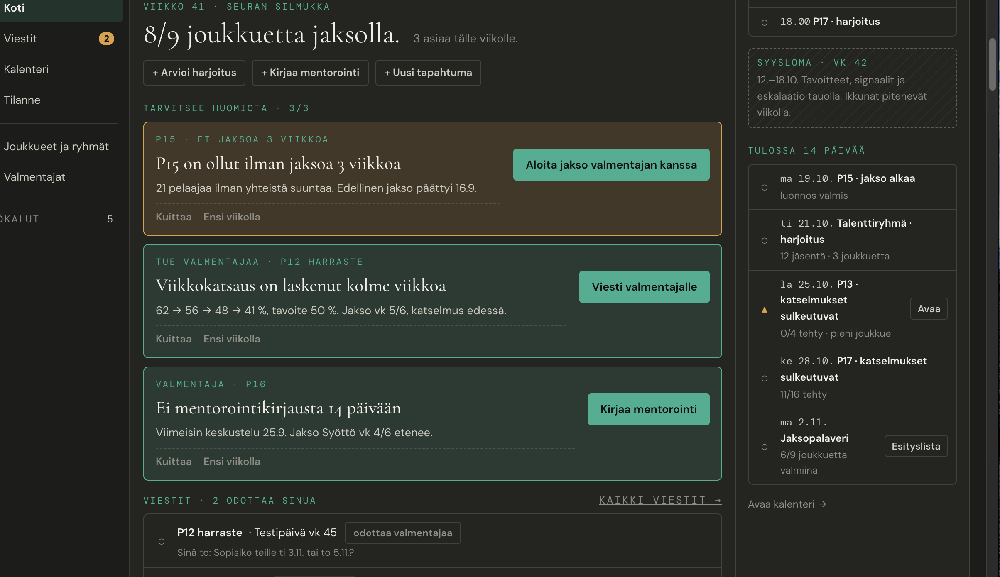
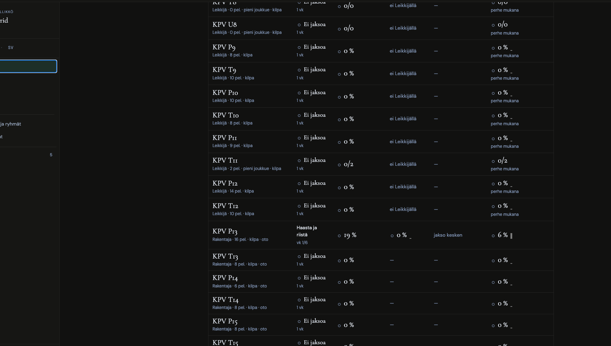

Tero 10.10.: "Saisiko joukkueet korteiksi? Nyt ne ovat allekkain, eikä kukaan jaksa katsoa." Tämä mockup tarkastaa mockupin 25 Kodin ja Tilanteen, korvaa Kodin joukkuetaulukon joukkuekorteilla ikävaiheittain ja järjestää tekstit ja vaiheet samaan rakenteeseen molemmilla sivuilla. Tilanne on mockupissa 30. Kaksi tilaa: kypsä (FC Demo, 9 joukkuetta) ja pilotti (KPV:n kaltainen, 15 joukkuetta, 1 jakso).


| Sivu | Havainto | Miksi se haittaa | Korjaus |
|---|---|---|---|
| Koti | Kolme isoa värillistä huomiokorttia, kussakin täytetty nappi, sekä kaksi täytettyä "Vastaa"-nappia | Viisi kilpailevaa päätoimintoa. Silmä ei tiedä, mistä aloittaa. Rikkoo D147:n. | Vain tärkein asia on signaalikortti. Loput ovat rivejä samassa "Tällä viikolla" -listassa, toiminto tekstilinkkinä. |
| Koti | Huomiot ja viestit kahtena erillisenä listana | Kaksi listaa samasta kysymyksestä: mitä minun pitää tehdä. | Yksi lista "Tällä viikolla": signaalit ja minua odottavat viestit samassa järjestyksessä, tyyppi rivin alussa. |
| Koti | Joukkueiden viikko -taulukko, 9–17 riviä, kolme prosenttisaraketta | Taulukkoa ei lueta. KPV:llä 14 riviä on "Ei jaksoa · 0 % · 0 % · 0 %". Tyhjät joukkueet (T8, U8) mukana. | Joukkuekortit ikävaiheittain. Jaksottomat yhdessä kortissa tunnisteina. 0 pelaajan joukkueet pois. |
| Koti | Pikatoiminnot kolmena reunanappina otsikon alla | Näyttävät päätoiminnoilta, vaikka ovat harvinaisia. | Hiljaiset "+ linkit" otsikon vieressä. |
| Koti | Otsikko "8/9 joukkuetta jaksolla" toistaa Tilanteen ensimmäisen luvun | Sama luku kahdella sivulla (D121). | Kodin otsikko kertoo viikon: "Viisi asiaa tällä viikolla." |
| Koti | Käyttöönottonauha amber-värisenä bannerina ylimpänä | Näyttää varoitukselta, vaikka on edistymistä. | Ohut neutraali rivi edistymispalkilla; poistuu kun käyttöönotto on valmis. |
| Tilanne | Viisi korttityyliä, napit joka rivillä, aikajanalla 9–17 riviä | Ks. mockup 30. | Mockup 30 (D147–D152). |
| Molemmat | Otsikot ovat vuoroin luku, väite tai teknistä kieltä; yläotsikot eri muodoissa ("TUE VALMENTAJAA · P12 HARRASTE") | Lukija ei opi, mistä mikin tieto löytyy. | Yksi tekstirakenne kaikkiin kortteihin (§4). |
| Nyt | Uusi | Sääntö |
|---|---|---|
| TUE VALMENTAJAA · P12 HARRASTE | Katsaus · P12 harraste | Yläotsikko kertoo aiheen ja joukkueen, ei kehota |
| Viikkokatsaus on laskenut kolme viikkoa | Viikkokatsauksia tehty yhä harvemmin | Havainto ilman ammattikieltä |
| 62 → 56 → 48 → 41 %, tavoite 50 % | 41 % pelaajista tällä viikolla (tavoite 50 %) · laskenut 3 viikkoa | Yksi luku, tavoite ja suunta |
| Viesti valmentajalle | Kirjoita valmentajalle | Teonsana, minä-muoto |
| Aloita jakso valmentajan kanssa | Aloita jakso | Lyhyt; tapa valitaan työkalussa (mockup 31) |
| VALMENTAJA · P16 / Ei mentorointikirjausta 14 päivään | Mentorointi · P16 / Edellinen keskustelu 14 päivää sitten | Myönteinen tai neutraali muoto, ei "ei"-alkua |